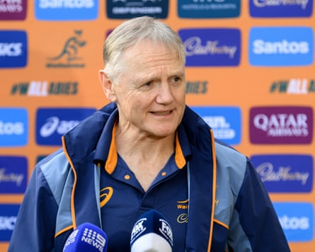

S o there we were in the bowels of Optus Stadium in Perth on Saturday night. The post-game media mixed zone is not always the natural home of relaxed, honest repartee, but Sione Tuipulotu is a friendly guy and the British & Irish Lions had just won their opening tour game in Australia. It was a chance for a couple of ritual inquiries and a spot of gentle breeze-shooting.
Aside from anything else, it was good to see Tuipulotu smiling. He had missed the entire Six Nations through injury, initially putting his tour participation in doubt. It must have been a particularly tough period given he was Scotland’s captain back in the autumn and also grew up in Melbourne. To say he fancied going on this trip would be an understatement.
His backstory is also a multifaceted sign of the times. The MacLeods and the Mackenzies have their famous clan tartans; the Tuipulotus not so much. His grandmother hails from Greenock but moved to Australia as a young girl. His father is from Tonga. The family genes, consequently, are more exotic than some and the concept of nationality correspondingly more blurred. Which, on this trip, puts him in the crosshairs of those who insist borders should be hard and fast and national flags nontransferable.
Maybe the Western Force stadium announcer thought he was being hilarious as he rattled off the Lions team: “The Aussie at No 14, Mack Hansen. Another Aussie at No 12, Sione Tuipulotu. The Kiwi now Irishman, James Lowe.” Either way, more fuel was instantly poured on one of sport’s more incendiary debates.
Tuipulotu didn’t hear it – or claimed he didn’t – but you could sense the 28-year-old’s heart sinking when the subject inevitably came up . “I knew there would be some ‘good humour’ coming back home to Australia,” he replied, more than a touch wearily. “These are all things we’ve got to take in our stride. Look, I am from Australia. I was born here. I don’t know how funny that gag is to everybody but I’m loving playing for the Lions.”
In other words, he wasn’t too impressed. Understandably so. Imagine if the same announcer pulls a similar stunt before England’s cricketers play the opening Test of the Ashes series in the very same stadium this November. “West Indian Englishmen Jofra Archer and Jacob Bethell, Pakistani Englishman Shoaib Bashir …” Harmless banter or something more insidious when all that should matter is the three lions on their caps?
The Lions prop Pierre Schoeman has already had to deal with such inquiries, as did Lowe on Saturday evening. Lowe qualified for Ireland via residency and played against the Lions for New Zealand Māori in 2017, but he and his wife are now Irish citizens and he insists representing the Lions “will make me proud until the end of my days”.
It may also be worth mentioning, for balance, that the current Wallaby squad are a similarly cosmopolitan bunch. The Fijian-born Filipo Daugunu qualifies via residency, while the winger Harry Potter was born in England. Tom Lynagh was born in Italy, for whom his brother Louis now plays, and raised in England. Taniela Tupou is known as the “Tongan Thor” while Hunter Paisami represented Samoa at under-20s level. Noah Lolesio and Will Skelton were also born in New Zealand.
Australia’s head coach, Joe Schmidt, meanwhile, is a Kiwi revered for his work in Ireland. Yet even Schmidt has had to row back publicly from a “sloppy” comment in which he pointedly referred to “the southern-hemisphere centre partnership” of Tuipolotu and Bundee Aki. Schmidt says he regretted the remark and that it was not meant as a slight.
Joe Schmidt was forced to backtrack on a comment.Photograph: Steven Markham/AAP
Too late, sadly, to douse the jingoistic flames. And if allowed to rage unchecked, where will it all end? A Ryder Cup team – Brexit means Brexit – containing nobody from beyond the white cliffs of Dover? A ban on the naturalised Canadian Greg Rusedski showing up at Wimbledon? A retrospective trawl through the Lions record books to insert asterisks beside Ronan O’Gara (born in the USA) or Paul Ackford (born in Germany)? Life is not always about staying in your notional lane or adhering to other people’s old‑school beliefs surrounding nationalism.
Nor, furthermore, has a single one of rugby’s regulations been broken. Yes, it would help if stricter rules applied around “project players” and the poaching of youthful southern hemisphere talent. Nor should it be possible, as it theoretically would be, for someone such as Jack Willis – the England international currently based in France – to switch allegiance to Ireland at the end of next year on the strength of a grandparent from Ulster. But where in the Lions tour agreement does it say that a strong Irish, Welsh, Scottish or English accent is a prerequisite to be a fully fledged tour member? Equally ludicrous is the idea being pedalled in some quarters that if, say, Tuipulotu, Hansen and Lowe were to combine to score a series-clinching try against the Wallabies it would somehow cheapen the Lions ethos. Good luck with flogging that theory to Tuipulotu’s proud granny Jacqueline, or, indeed, Andy Farrell.
Because once they pull on a red jersey with a Lions badge on their chest, there should be no doubting any player’s commitment. The eligibility rules are what they are and, until they change, the current whinging is both disrespectful and irrelevant. Those who disagree are entitled to their opinion. But if people think certain members of the Lions squad now in Australia are devaluing the exercise they are very much barking up the wrong gum tree.